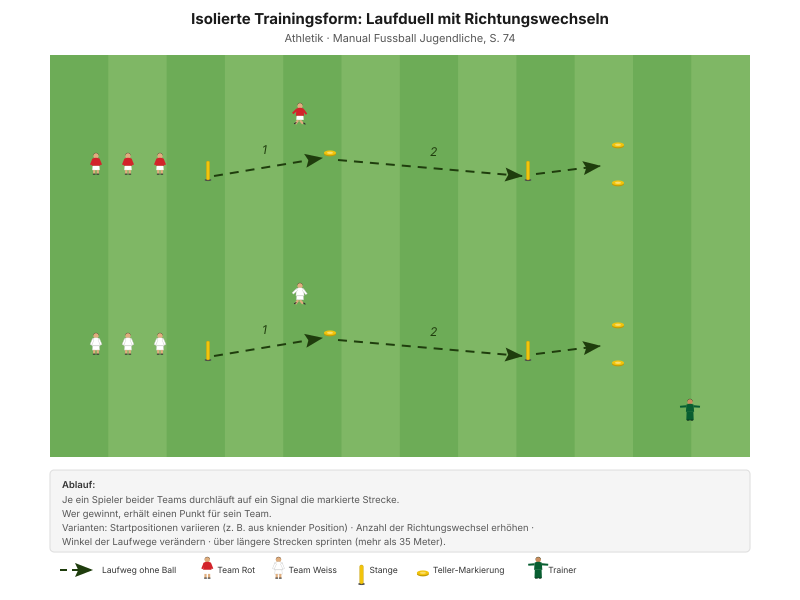
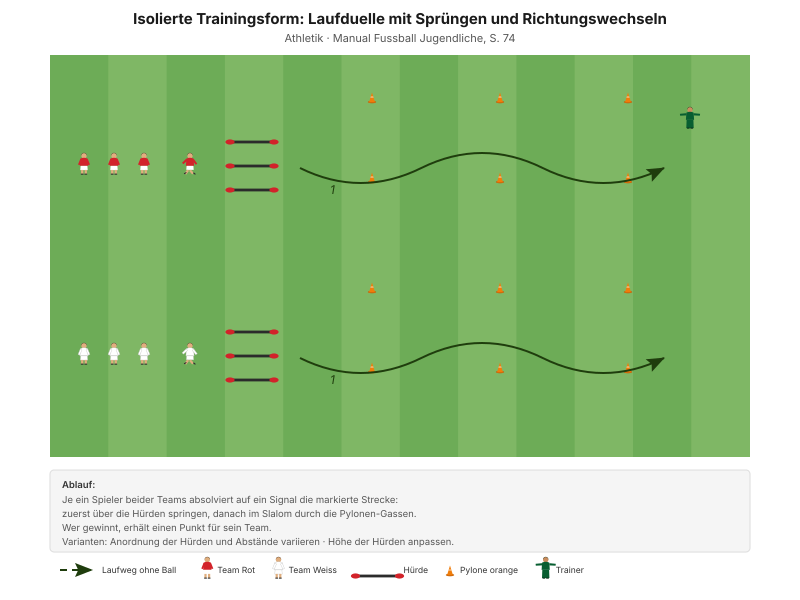

Wendigkeit ist Schnelligkeit mit Richtungswechsel – und die entscheidet im Fussball häufiger als der gerade Sprint. Dazu kommt die Landung: Wer sauber abbremst, verletzt sich seltener.
"Explosiv und dynamisch agieren" Erscheinungsform A1, Manual Fussball Jugendliche, S. 72
Der Coachingfokus des Abends liegt auf dem Abbremsen, nicht auf dem Beschleunigen. Das Knie darf beim Abstoppen und Landen weder nach innen noch nach aussen knicken. Das ist dieselbe Regel wie bei den Big 4 – heute unter Tempo.
| Zeit | Min | Teil | Inhalt |
|---|---|---|---|
| 0–4 | 4 | Besammlung | Thema ansagen, Gruppen einteilen |
| 4–16 | 12 | E1 | Doppelpass und Dribbling · Big 4 zwischen den Wiederholungen |
| 16–22 | 6 | E2 | 4 gegen 4 ins Feld dribbeln |
| 22–30 | 8 | E3 | Laufduell mit Richtungswechseln (Explosivität) |
| 30–45 | 15 | H1 | Laufduelle mit Richtungswechseln · Varianten |
| 45–48 | 3 | Pause | Trinken, Umbau |
| 48–70 | 22 | H2 | Laufduelle mit Sprüngen |
| 70–82 | 12 | Abschluss | Freies Spiel 5 gegen 5 plus 2 Torhüter |
| 82–90 | 8 | Ausklang | Cool-down, zwei Entwicklungsfragen, Verabschiedung |
| Total | 90 |
Einstieg 26 · Hauptteil 37 · Abschluss 20 Min. – nach dem Trainingsschema des Manuals (S. 43).
Nur einmal umbauen: Das Feld des Einstiegs bleibt bis zur Pause. Die Bahnen für H1 und H2 liegen daneben; für H2 kommen nur die Hürden dazu.
Eigene Skizze · Platzaufteilung
Nur einmal aufbauen – das Einstiegsfeld liegt im späteren Spielfeld.
12 Minuten · inneres Feld 26 × 18 m · alle 12 Spieler
Eigene Skizze · Doppelpass und Dribbling
3 Wiederholungen à 1'30''–2' – zwischen den Wiederholungen je zwei Präventionsübungen.
"Finte mit Körpertäuschung – Rhythmuswechsel nach der Finte" SFV-Lernbaustein "Einstieg TE: Dribbling 02", Phase 1
Der Rhythmuswechsel ist genau das, was im Hauptteil ohne Ball geübt wird: langsam, dann plötzlich schnell.
Je zwei Übungen zwischen den Wiederholungen, 25 Sekunden pro Übung:
| Bereich | Übung | Worauf achten |
|---|---|---|
| Fussgelenk | Einbeinsprünge vorwärts | Bei der Landung knickt das Knie nicht ein, Oberkörper leicht nach vorne. |
| Knie | Kniebeuge mit Spannung | Fersen auf dem Boden, Oberkörper gerade, Blick nach vorne. |
| Hüfte | World's Greatest Stretch | Schultern in einer Linie mit dem Arm, hintere Fussspitze in den Boden drücken. |
| Hamstrings | Standwaage mit Partner | Keine Rotation bei den Schlägen auf den Ball zulassen. |
"Arbeit mit Zeitvorgaben – nicht mit Anzahl Wiederholungen." Prinzip Körperstabilität, Manual Fussball Jugendliche, S. 75
Zwei Punkte pro Übung nennen, nicht mehr. Qualität vor Tempo.
6 Minuten · gleiches Feld · 3 Wiederholungen à 1'30''–2'
"Finte mit Körpertäuschung – Rhythmuswechsel nach der Finte" SFV-Lernbaustein "Einstieg TE: Dribbling 02", Phase 2
8 Minuten · 2 Bahnen · zwei Teams
Manual-Vorlage · Diagramm 48 "Laufduell mit Richtungswechseln" (S. 74)

| Parameter | Vorgabe |
|---|---|
| Distanz | 15–30 m |
| Wiederholungen | 3 |
| Pause zwischen Wiederholungen | 1/15 (Belastung × 15) |
| Serien | 3 |
| Pause zwischen Serien | 1'30''–2' |
"Erholungszeit: 10- bis 20-fache Dauer der Belastungszeit, abhängig von der Laufdistanz. Vollständig erholen zwischen den Wiederholungen." Prinzipien Explosivität, Manual Fussball Jugendliche, S. 72
15 Minuten · 3 Bahnen · alle 12 Spieler
Manual-Vorlage · Diagramm 48 "Laufduell mit Richtungswechseln" (S. 74)
Dieselbe Grundform wie in E3 – im Hauptteil mit den Varianten des Manuals.
Organisation: 3 Bahnen à 4 Spieler. Immer einer läuft, drei erholen sich. Pro Variante 3 Durchgänge, dazwischen vollständig erholen.
22 Minuten · 2 Bahnen · alle 12 Spieler
Manual-Vorlage · Diagramm 49 "Laufduelle mit Sprüngen und Richtungswechseln" (S. 74)

Die Landung nach einem Sprung ist die Situation mit dem höchsten Verletzungsrisiko – und gleichzeitig die, die im Fussball ständig vorkommt: nach dem Kopfball, nach dem Zweikampf, nach dem Abstoppen. Wer hier sauber landet, hat die Big 4 im Spiel angekommen.
12 Minuten · gleiches Feld, kein Umbau
Keine Auflagen, keine Bonusregeln. Hier wird sichtbar, was von den 70 Minuten davor hängen geblieben ist.
8 Minuten · Cool-down im Gehen, dann Kreis in der Mitte
Zuerst 3–4 Minuten lockeres Auslaufen und Mobilität, dann der Kreis. Zwei Fragen – die Antworten kommen von den Spielern, nicht vom Trainer:
"Gelingt es dir, die Konzentration lange aufrecht zu erhalten? Was lenkt dich ab? Worauf kannst du dich fokussieren?"
"Hast du bis zum Schluss alles gegeben?" Entwicklungsfragen, Manual Fussball Jugendliche, S. 82 und 81
Material aufräumen – laut Teamregel Respekt Teamarbeit, nicht Strafe.
| Teil | Vorlage | Seite |
|---|---|---|
| E1 – E3 | SFV-Lernbaustein "Einstieg TE: Dribbling 02", Phasen 1–3 | – |
| E3, H1 | Isolierte Trainingsform "Laufduell mit Richtungswechseln" (Diagramm 48) | 74 |
| H2 | Isolierte Trainingsform "Laufduelle mit Sprüngen und Richtungswechseln" (Diagramm 49) | 74 |
| Varianten | Isolierte Trainingsformen | 74 |
| Ziele, Prinzipien, Coaching | Explosivität | 72 |
| Körperstabilität und Mobilität | Athletik und Gesundheit | 75 |
| Trainingsaufbau | Trainingsschema (Abb. 19) | 43–45 |
Alle Seitenangaben beziehen sich auf das J+S Manual Fussball Jugendliche (BASPO/SFV, 2022). Spielerzahlen und Feldmasse sind auf einen Kader von 12 Spielern angepasst. Dieser Trainingsplan wurde mit Unterstützung von KI (Claude, Anthropic) erstellt.